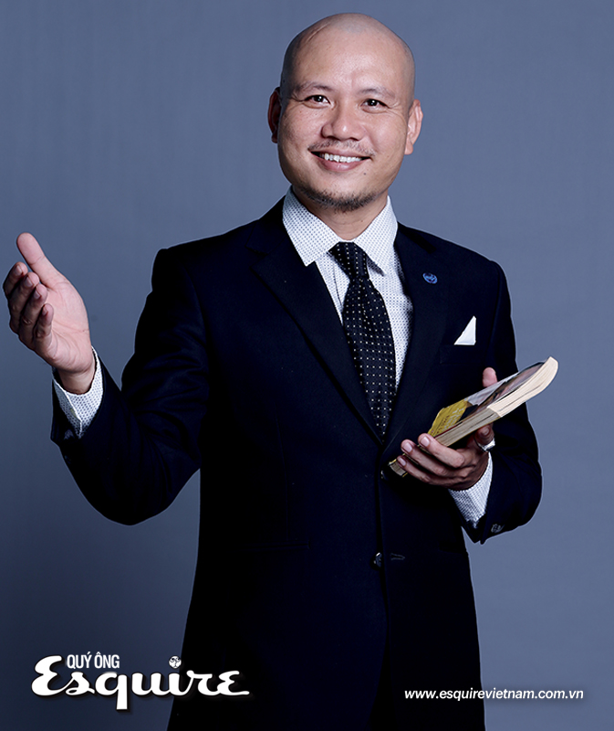
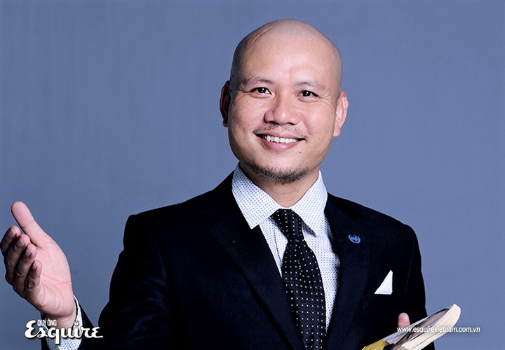
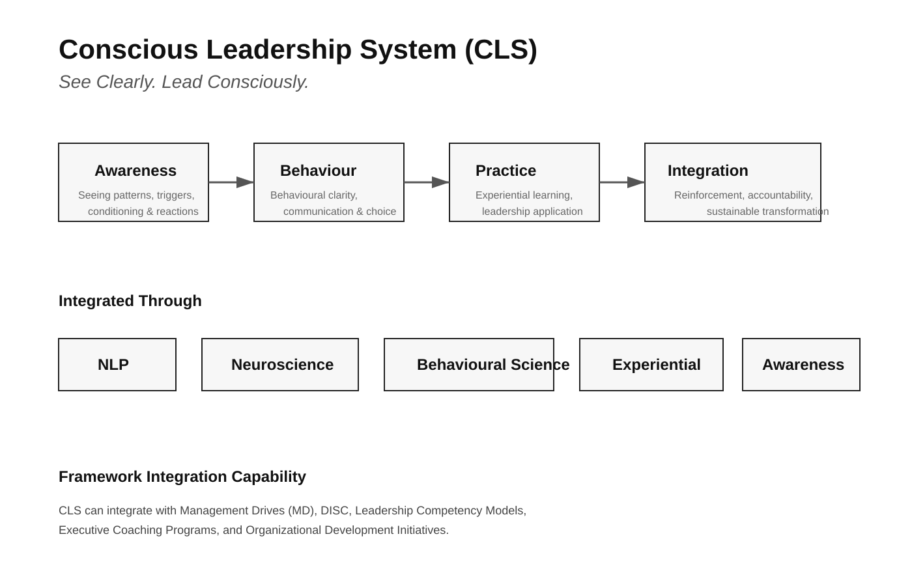

See clearly. Lead consciously.
Helping organizations and individuals develop executive clarity, healthier human dynamics, and more conscious ways of working and living.
I work as a Transformation Partner for organizations, leaders, and individuals seeking meaningful and sustainable change — moving beyond surface-level performance toward stronger leadership quality, clearer thinking, healthier human dynamics, and more conscious ways of leading and living.
My work integrates:
The focus is not only external results, but the quality of mind behind decision-making, leadership, and human interaction. Real transformation emerges not from forcing change, but from understanding how perception, behavior, and conditioned patterns are formed.
Nhìn thấu suốt. Lãnh đạo tỉnh thức.
Đồng hành cùng tổ chức và cá nhân phát triển sự minh triết trong điều hành, tối ưu hóa sự tương tác, và xây dựng lối sống, cách làm việc tỉnh thức hơn.
Tôi là Người đồng hành Chuyển hóa cho các tổ chức, lãnh đạo và cá nhân đang tìm kiếm sự thay đổi thực chất và bền vững — hướng tới chất lượng lãnh đạo mạnh mẽ hơn, tư duy thấu suốt hơn, sự kết nối lành mạnh giữa con người, và những cách thức lãnh đạo, chung sống tỉnh thức hơn.
Công việc của tôi tích hợp:
Trọng tâm không chỉ nằm ở kết quả bên ngoài, mà còn ở chất lượng tâm trí đằng sau mỗi quyết định, phong cách lãnh đạo và sự tương tác giữa con người. Sự chuyển hóa thực sự không đến từ việc ép buộc thay đổi, mà từ việc thấu hiểu cách nhận thức, hành vi và các mô thức định hình được tạo ra.
My journey began within the corporate world, working in leadership and management roles in multinational environments where performance, growth, and results were central priorities.
Over the years, I witnessed something increasingly clear: Many leaders and organizations knew what needed to change — yet struggled to create lasting transformation.
Despite intelligence, experience, and strong business capability, stress, reactive behavior, communication breakdown, and unhealthy human dynamics continued to emerge beneath performance pressure.
This question led me into a much deeper exploration of leadership, human behavior, coaching, neuroscience, NLP, awareness-based development, and eventually the practical study of Dhamma as a framework for understanding mind, conditioning, and perception.
Over time, I realized that sustainable leadership and transformation do not emerge only from strategy, motivation, or external performance systems, but from the quality of awareness behind how we think, perceive, react, communicate, and lead.
Hành trình của tôi bắt đầu từ thế giới doanh nghiệp, đảm nhiệm các vai trò lãnh đạo và quản lý trong môi trường đa quốc gia — nơi hiệu suất, sự tăng trưởng và kết quả luôn là những ưu tiên hàng đầu.
Qua nhiều năm, tôi đã chứng kiến một thực tế ngày càng rõ ràng: Nhiều nhà lãnh đạo và tổ chức biết rõ điều gì cần thay đổi — nhưng lại chật vật để tạo ra sự chuyển hóa bền vững.
Bất kể trí tuệ, kinh nghiệm và năng lực kinh doanh nhạy bén; sự căng thẳng, các phản ứng cảm xúc, sự đứt gãy trong giao tiếp và những động lực thiếu lành mạnh giữa người với người vẫn không ngừng nảy sinh dưới áp lực của hiệu suất.
Câu hỏi đó đã dẫn dắt tôi vào một cuộc khám phá sâu sắc hơn về lãnh đạo, hành vi con người, khai vấn, khoa học não bộ, NLP, phát triển dựa trên tỉnh thức, và cuối cùng là nghiên cứu thực nghiệm Dhamma như một khung tham chiếu để thấu hiểu tâm trí, các mô thức định hình và nhận thức.
Theo thời gian, tôi nhận ra rằng sự lãnh đạo và chuyển hóa bền vững không chỉ đến từ chiến lược, động lực hay các hệ thống quản trị bên ngoài, mà đến từ chất lượng của sự tỉnh thức (awareness) đằng sau cách chúng ta tư duy, nhận định, phản ứng, giao tiếp và dẫn dắt.

My approach is grounded in the study and practice of Dhamma — viewed not as a belief system, but as a direct way of understanding the mind, conditioning, perception, and human suffering.
I utilize Neuroscience, NLP, and Behavioral Science as practical frameworks to better understand:
At the core of this work is Awareness.
The capacity to observe Thought without identification, Emotion without reaction, and Pressure without unconscious habit creates the possibility for clearer leadership and sustainable transformation.
Nền tảng công việc của tôi dựa trên sự nghiên cứu và thực hành Dhamma (Pháp) — được nhìn nhận không phải như một hệ thống đức tin, mà là phương pháp trực tiếp để thấu hiểu tâm trí, các mô thức định hình, nhận thức và khổ đau.
Tôi sử dụng Khoa học Não bộ, NLP và Khoa học Hành vi như những khung tham chiếu thực tiễn để thấu hiểu sâu hơn về:
Cốt lõi của tiến trình này là Sự tỉnh thức (Awareness).
Khả năng quan sát Suy nghĩ mà không bị đồng hóa, Cảm xúc mà không phản ứng và Áp lực mà không rơi vào thói quen vô thức tạo ra khả năng cho sự lãnh đạo thấu suốt và chuyển hóa bền vững.
Core transformation system
See Clearly. Lead Consciously.
The Conscious Leadership System (CLS) is an integrated awareness-based leadership transformation framework designed to help leaders, teams, and organizations develop clearer leadership, healthier human dynamics, and sustainable behavioural change.
CLS combines:
The system focuses on helping individuals and organizations move beyond surface-level training toward meaningful transformation through awareness, behavioural practice, and integration.

At the core of CLS is a simple principle: Transformation begins when we learn to see clearly:
Leadership becomes more conscious when awareness is translated into intentional behaviour, clearer communication, wiser decision-making, and healthier human dynamics.
CLS is designed to bridge awareness with real-world leadership application.
Awareness → Behavioural Clarity → Experiential Practice → Integration & Reinforcement → Sustainable Transformation
Self-Leadership & Awareness
Understanding behavioural patterns, stress responses, leadership habits, and internal reactions under pressure.
Communication & Human Dynamics
Developing conscious communication, adaptive leadership, psychological safety, and healthier collaboration.
Accountability & Team Performance
Strengthening ownership, delegation, alignment, and behavioural consistency within teams.
Leadership Under Pressure
Building emotional regulation, behavioural flexibility, clearer decision-making, and leadership presence in complex environments.
Integration & Sustainable Transformation
Embedding awareness and behavioural change into everyday leadership and organizational practice.
CLS is not designed as traditional slide-heavy training or short-term motivational learning.
The system operates through:
Participants are invited not only to understand concepts, but to observe patterns, practice new behaviours, and develop more conscious ways of leading and interacting.
CLS can operate as a stand-alone leadership transformation system or integrate with existing organizational frameworks such as:
The role of CLS is not to replace frameworks, but to deepen behavioural integration and support sustainable transformation.
Flagship Programs
Experiential leadership intensives focused on awareness, communication, accountability, delegation, and behavioural transformation.
Advanced Leadership Pathways
Multi-week integration journeys designed for deeper leadership and organizational transformation.
Executive Coaching
Individual leadership integration and conscious leadership development for executives and leaders.
Leadership Labs
Scenario-based behavioural practice and experiential leadership development environments.
CLS is particularly relevant for organizations navigating:
Awareness is the beginning.
Behaviour is the bridge.
Integration is the transformation.
Hệ thống chuyển hóa cốt lõi
Nhìn Thấu Suốt. Lãnh Đạo Tỉnh Thức.
CLS là một khung năng lực chuyển hóa lãnh đạo dựa trên nền tảng tỉnh thức, được thiết kế để giúp các nhà lãnh đạo, đội ngũ và tổ chức phát triển năng lực lãnh đạo thấu suốt, tối ưu hóa tương tác con người và thay đổi hành vi bền vững.
CLS tích hợp:
Hệ thống tập trung vào việc giúp các cá nhân và tổ chức vượt qua các chương trình đào tạo bề mặt để hướng tới sự chuyển hóa thực chất thông qua nhận thức, thực hành hành vi và sự tích hợp.
Sự chuyển hóa bắt đầu khi chúng ta học cách nhìn thấu suốt:
Lãnh đạo trở nên tỉnh thức hơn khi sự nhận biết được chuyển hóa thành hành vi có chủ đích, giao tiếp thấu suốt hơn, ra quyết định minh triết hơn và các tương tác con người lành mạnh hơn.
Tỉnh thức → Hành vi rõ ràng → Thực hành trải nghiệm → Tích hợp & Củng cố → Chuyển hóa bền vững
Lãnh đạo Bản thân & Sự tỉnh thức
Thấu hiểu các mô thức hành vi, phản ứng với căng thẳng, thói quen lãnh đạo và các phản ứng nội tâm dưới áp lực.
Giao tiếp & Động lực Con người
Phát triển giao tiếp tỉnh thức, lãnh đạo thích ứng, an toàn tâm lý và sự hợp tác lành mạnh.
Trách nhiệm & Hiệu suất Đội ngũ
Tăng cường tinh thần làm chủ, sự ủy quyền, tính đồng bộ và sự nhất quán trong hành vi của đội ngũ.
Lãnh đạo dưới Áp lực
Xây dựng khả năng điều tiết cảm xúc, sự linh hoạt trong hành vi, khả năng ra quyết định thấu suốt và sự hiện diện của nhà lãnh đạo trong môi trường phức tạp.
Tích hợp & Chuyển hóa Bền vững
Nhúng nhận thức và sự thay đổi hành vi vào thực tế lãnh đạo và vận hành tổ chức hàng ngày.
Hệ thống vận hành thông qua học tập qua trải nghiệm, quan sát hành vi, phản tư có hướng dẫn và ứng dụng thực tế.
CLS tích hợp với các khung năng lực sẵn có: Management Drives (MD), DISC, Khung năng lực lãnh đạo, Khai vấn lãnh đạo (Executive Coaching).
Tỉnh thức là khởi đầu.
Hành vi là nhịp cầu.
Tích hợp là sự chuyển hóa.
Short insights. Direct observations. Real practice on mind and leadership.
Most people try to change their lives by changing conditions. But true change starts by changing the observer of those conditions. When the "who" that is experiencing life shifts, the world follows.
Not everything you feel needs to be fixed. Sometimes, the fastest way to peace is simply allowing the discomfort to exist without trying to push it away. Freedom is the absence of resistance.
You are not tired because of life; you are tired because of how you resist it. Effort is mental. Energy is natural. When you stop fighting what is, energy returns.
What you call “yourself” is often just a pattern repeating. Awareness is the first crack in the armor of habit. Once you see the pattern, you are no longer the pattern.
Clarity does not come from thinking more. It comes from the silence between thoughts. In that gap, the truth reveals itself without effort.
You don’t have to push life into a certain shape. Like water, life finds its own way when you remove the obstacles of "should" and "must".
The mind is a great servant but a terrible master. Most leadership failures are not failures of skill, but failures of the master being led by the servant.
Suffering is the distance between how things are and how you think they should be. Close the distance, and the suffering vanishes.
Real power is not found in controlling others, but in the complete lack of a need to control anything at all.
The most important conversation you will ever have is the one happening inside you right now. Is it conscious, or is it just a recording?
Success is not a destination. It is the quality of awareness you bring to the current step. If the step is conscious, the journey is already successful.
Wait. Breathe. Observe. Most problems solve themselves when you stop feeding them with your anxiety.
Your impact on others is not what you say, but the state of being you say it from. People don't hear your words; they feel your presence.
First, the reaction. Then, the seeing. Every time you notice, the gap between the trigger and the response gets a little wider. Not yet free — but no longer completely unaware.
Structure is the Body. Meaning is the Soul. Without Soul, the Body is just a burden. True leadership is ensuring structures are powered by a conscious source of meaning.
Những góc nhìn súc tích. Quan sát trực tiếp. Thực hành thực tế về tâm trí và lãnh đạo.
Hầu hết mọi người cố gắng thay đổi cuộc đời bằng cách thay đổi hoàn cảnh. Nhưng sự thay đổi thực sự bắt đầu bằng việc thay đổi người quan sát những hoàn cảnh đó.
Không phải mọi cảm xúc đều cần được "sửa chữa". Đôi khi con đường nhanh nhất dẫn đến bình an là cho phép sự khó chịu tồn tại. Tự do là không kháng cự.
Bạn mệt mỏi không phải vì cuộc đời, mà vì cách bạn kháng cự nó. Khi bạn ngừng chiến đấu với những gì đang là, năng lượng sẽ quay trở lại.
Cái gọi là "bản thân" thường chỉ là một khuôn mẫu lặp lại. Sự tỉnh thức là vết nứt đầu tiên trên lớp giáp của thói quen.
Sự rõ ràng đến từ sự tĩnh lặng giữa các dòng suy nghĩ. Trong khoảng trống đó, sự thật tự lộ diện.
Bạn không cần ép cuộc sống vào một hình dạng nhất định. Cuộc sống tự tìm đường đi khi bạn loại bỏ những rào cản của "nên" và "phải".
Tâm trí là người đầy tớ giỏi nhưng là người chủ tồi. Lãnh đạo thất bại khi người chủ bị dẫn dắt bởi người đầy tớ.
Khổ đau là khoảng cách giữa thực tại và mong cầu của bạn. Xóa bỏ khoảng cách, khổ đau tự tan biến.
Sức mạnh thực sự không nằm ở việc kiểm soát người khác, mà ở việc không còn nhu cầu kiểm soát bất cứ điều gì.
Cuộc đối thoại quan trọng nhất là cuộc đối thoại đang diễn ra bên trong bạn. Nó là tỉnh thức hay chỉ là một bản ghi âm?
Thành công là chất lượng tỉnh thức bạn mang vào bước chân hiện tại. Nếu bước chân tỉnh thức, hành trình đã thành công.
Chờ đợi. Hít thở. Quan sát. Hầu hết vấn đề tự biến mất khi bạn ngừng nuôi dưỡng chúng bằng sự lo âu.
Tác động của bạn lên người khác không phải là lời bạn nói, mà là trạng thái tâm thức nơi lời nói đó phát ra.
Phản ứng trước. Thấy sau. Mỗi lần bạn nhận diện, khoảng trống giữa tác nhân và phản ứng rộng thêm một chút. Chưa tự do — nhưng không còn mê muội.
Cấu trúc là Thân. Ý nghĩa là Tâm. Không có Tâm, Thân chỉ là gánh nặng. Lãnh đạo thực thụ đảm bảo cấu trúc được vận hành bởi ý nghĩa tỉnh thức.
© Nguyen Tuan Kiet